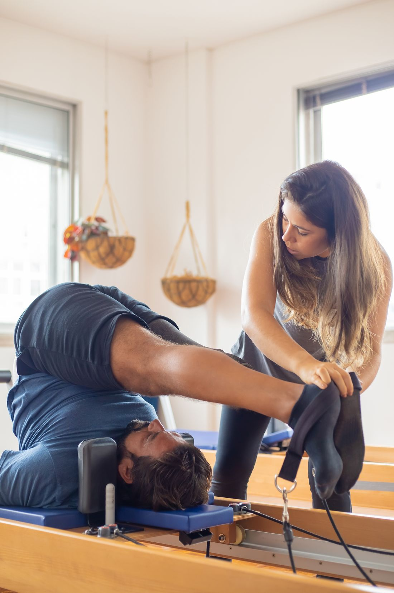

MOVEMENT IS HUMAN.
SO IS OUR CARE.
Physiotherapy begins with understanding the person behind the movement.

LISTEN FIRST.
MOVE TOGETHER.
Your concerns, goals and day-to-day life provide the starting point. An assessment creates space to understand movement and discuss a useful way forward.
This template is designed for a clinic to share its own verified story, team and practical information. No accreditation or facilities are implied.
LESS PAIN.
MORE
POSSIBILITY.
Care that starts with listening. A plan that moves with you.
Our Approach
01—03 / INDIVIDUAL AT EVERY STAGEASSESS
Understand your movement, your concerns and your goals.
REHABILITATE
Build an individual plan with guided, appropriate activity.
RETURN TO ACTIVITY
Review progress together and plan your next steps.
YOUR JOURNEY. STEP BY STEP.
Clear next steps, from your first conversation to ongoing support.
- 01
Listen & assess
Discuss what matters to you.
- 02
Make a plan
Agree on appropriate goals.
- 03
Move together
Work through guided sessions.
- 04
Build consistency
Follow clinician-supplied home plans.
- 05
Review & adapt
Reflect on progress and adjust.
LET’S GET YOU
MOVING FORWARD.
A conversation is a good place to start. Tell us what you want to get back to.
Request an Assessment Request only. A clinic team must confirm your session.